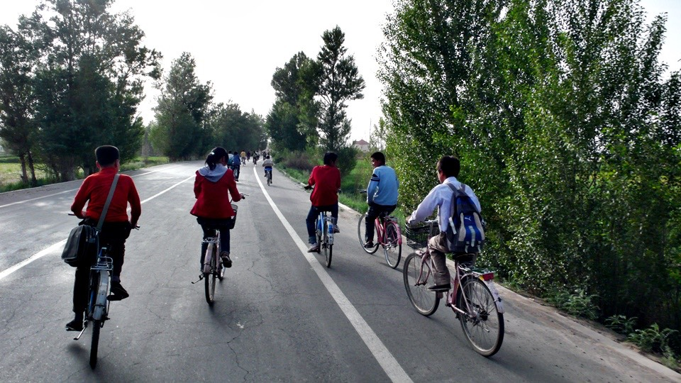

Just like yesterday, the sky looks as grey as ever in all directions. Perfect for riding.
The harsh sun is no way to be found and blocked by the dust.

Breakfast today is the leftovers from yesterday’s picnic, Biscuits, chips and peanut butter milk.
I am having a picnic on my bike, reckon by the time I am full I would have finished half of my snacks.
As expected, the minute I left Gaotai it’s uphill and it comes with a strong face wind.
Uphill is already a battle, the wind is like a knife in my back. I am riding like a turtle, averaging 10km/h.
the toilet rolls are flying like flags in the wind. Hey, I could fly them just like a kite.

I guess the face wind has its virtues, since it is so hard pushing the pedals,
I am not so sure whether it was because of the wind or the hill, so I am blaming the wind and purposely forgetting about the hill.
Oh well, climbed another few hundred meters above sea level.

Ever since entering the province of Gansu, I have been expecting deserts, only today did I notice I have already rode pass a few.
But these deserts are not what I envisioned. I have always thought deserts are with sand hills, cactus and camels running around.
The deserts I am passing now are more like mud hills, not a single cactus and I have sheeps instead of camels.
These green vegetations when dried, becomes little dry brown grass balls, rolling all over the desert.

man, the Gansu deserts are not what I imagines.
I guess I need to get to Xinjiang to see my deserts?
The distance between towns and villages are getting longer and obviously more risky.
The 40km uphill I rode after leaving Gaotai are all desert areas.
The sky is dusty and the weather warm, but I am only seeing desert plains everywhere.
Only after another 40km did I see people on the road. This is what it feels like in deserted areas.
The more I travel toward the Northwest, the more I am feeling it. I better check my rations,
it has to at least allow me to travel in this condition for a day to be safe.
I arrived at a little village nmed Yuensanze around lunch, yeah!

Ordered a noodle dish I never tried before and ran to the grocer for ice popsicles.
It took them half an hour to serve the noodle, is the dish that difficult to prepare?
The meat slices looked burnt, but burnt meat slices taste decent.
gave the empty plate back to the waitress after I cleaned off the plates and took me literally seconds before I dozed off on the table.
I was watching “Prison Break” last night and you just have to know what happens next, damn.
Anyway, woke up with a hunger, I guess I will have a cold noodle dish.
Hang on, let me grab another ice popsicle before the dish is served.
whilst having lunch, a truck driver was also here for lunch, asked him about the road ahead and got good news.
From here onward the road is flat and turns downhill all the way to Jiuquan, yes, easy ride ahead.
I am having this lazy, eat & sleep some more feeling, s dozed off until 13h30.
I guess I better get on the road. Since I scheduled to only arrive at Jiuquan tomorrow,
but the down hill ride ahead may just get me there tonight.
The next on the schedule is Jiuquan to Jiayuguan, 30 km,
if I ride off at 07h00 in the morning I could get there by 09h00 and start looking for a hostel.
Sounds stupid, kind of feeling like I am wasting money on accommodation and I am not exactly getting a day off.
I think I will look for a plce to stay the night about 20km off Jiuquan then ride past it tomorrow and stay the night at Jiayuguan.
This way I can tour the Great Wall and take a day or two off.
Had a bit of rain on the way, well, small drop “almost rain” rain.
Didn’t even bother with the rain coat and it didn’t last long either.
Since the sky is dusty, the dried rain drops left mud spots on my sun glasses.

Left the National Road and try to ride in the sand, I reckon my tires will probably get stuck in it.

Guess not, the desert is harder than tar, actually a better ride.
Maybe if I had enough provisions I will “bravely” ride into the desert.
Since all the trucks are on the new highway, the National road is mine again.
The sceneries are nothing but sand and stones with a bit of green weeds extending toward the horizon, over and over.

I am sure you have seen people carrying people on their back, I am now watching trucks on tucks passing by.
This is nothing, I have seen stranger things, just not fast enough to get my camera out.

To prevent the desert covering the roads, the municipality grew trees along side the road.
But it seems they just plant them and leave them. Barely looking like a tree.
Since it is planted in sand, I wonder how long it will last.
Water is scarce, river beds tens of meters wide has only streams of water running.
Passing some old buildings on the way, although we are at the 21st century,
the people in these deserted areas are still living by the memories passed down to them.
Unlike the people in the city who claims creativity to disguise destruction and continues to build over history,
here, history is a way of live.
Almost done with the mountains and are seeing greens again.
Couple of mud brick house on the side of the road, just wondering, these mud brick lasts because of no rain?

Gonna have to start looking for my accommodation for the night. I am still 40km away from Jiuquan,
any hostels within would be fine by me. I guess I won’t make it to Jiuquan anyway,
not only I am rather tired, it’s not economical. I think I will rest early and ride tomorrow.
Riding amongst students riding home after school, I guess no one notices I am not local. XD

How’s this for a new business idea, a shop that offers hotel, internet café, barbeque and lotto all together.

And they all in business! Not just signs! The price for accommodation is fair, 20RMB for a double room.
I just couldn’t figure out what this building was used for before, my room had a sign, “Store Room”.
The manageress is busy tending to lotto ticket customers so had no time for me.
The lotto tickets in China is rather cheap. It will cost me 50 NT$ in Taiwan, here it is 0.50c, equivalent of 3 NT$.
After I paid for my accommodation I went strolling the streets in my white & blue striped slops and my beach short looking for diner.
Had Sweet Bean Sauce Noodle and watching the news whilst at it,
apparently one more month China will be harvesting wheat.

The sad thing though is that quite a few areas in China are desperate for rain.
Some area hasn’t had rain for 2 months. It is estimated the harvest will be about 40% short then expected.
Since the news mentioned drought, I just realized I have been riding in China for a while now and I have only encountered one rainy day.
I wonder if this drought has anything to do with global warming. Honestly,
we really need to start doing something for mother earth who has only provided for us.
The way it’s going, our children won’t have a place to live.